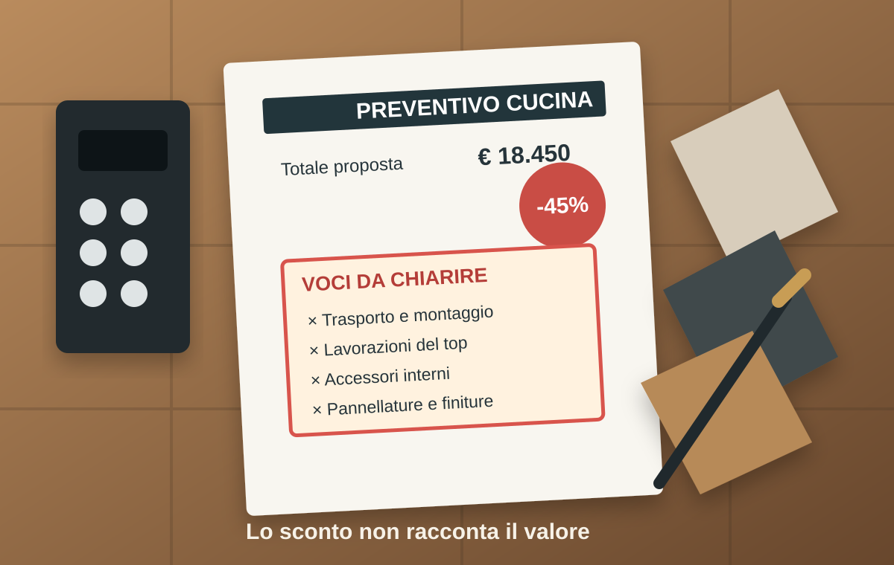

Ciò che si vede subito
Prezzo di listino, percentuale di sconto, totale finale e scadenza della proposta.

Caso pratico preventivo
Il punto da chiarire era dove finivano i soldi: materiali, top, elettrodomestici, accessori, montaggio e lavorazioni.
Leggi la risposta rapidaRisposta rapida
Per confrontarlo bisogna sapere quali materiali, codici di elettrodomestici, accessori, lavorazioni, trasporto, montaggio e servizi sono inclusi. Due totali simili possono acquistare risultati molto diversi; un prezzo più basso può dipendere da elementi esclusi o da specifiche inferiori.
Il problema nascosto
Un preventivo può sembrare conveniente e restare difficile da confrontare quando mancano specifiche, codici, quantità, lavorazioni incluse ed esclusioni. In questa situazione lo sconto attira l'attenzione, ma non permette di capire che cosa verrà realmente consegnato.
Il confronto corretto
Prezzo di listino, percentuale di sconto, totale finale e scadenza della proposta.
Materiali effettivi, dotazioni, codici, quantità, lavorazioni, montaggio, assistenza ed esclusioni.
Dati da verificare
La descrizione deve permettere di capire finiture, spessori, bordi, supporti, meccanismi e lavorazioni che incidono su durata e costo.
Il marchio da solo non basta. Servono modelli precisi per confrontare funzioni, dimensioni, classe energetica, garanzie e valore.
Trasporto, montaggio, rilievo, allacciamenti, modifiche impiantistiche, smaltimento e lavorazioni aggiuntive devono essere chiariti.
Limite dell'analisi pubblica: senza il documento completo, i codici dei prodotti e le condizioni commerciali non è possibile stabilire se il prezzo sia alto, basso o corretto. Il caso mostra perché lo sconto non può sostituire la lettura delle specifiche.
Conseguenza economica
La differenza può emergere dopo la firma, quando una lavorazione risulta esclusa, un elettrodomestico è diverso da quello immaginato o il materiale scelto non corrisponde al valore percepito. Prima dell'accettazione, invece, le voci possono ancora essere richieste e confrontate.
Scopri cosa comprende l'analisi del preventivo cucinaPortale pubblico
Descrivi il dubbio e allega il preventivo completo, il progetto e gli eventuali confronti in un unico invio. La valutazione iniziale serve a capire se il caso è adatto e quale livello è corretto.
Apri il portale pubblico